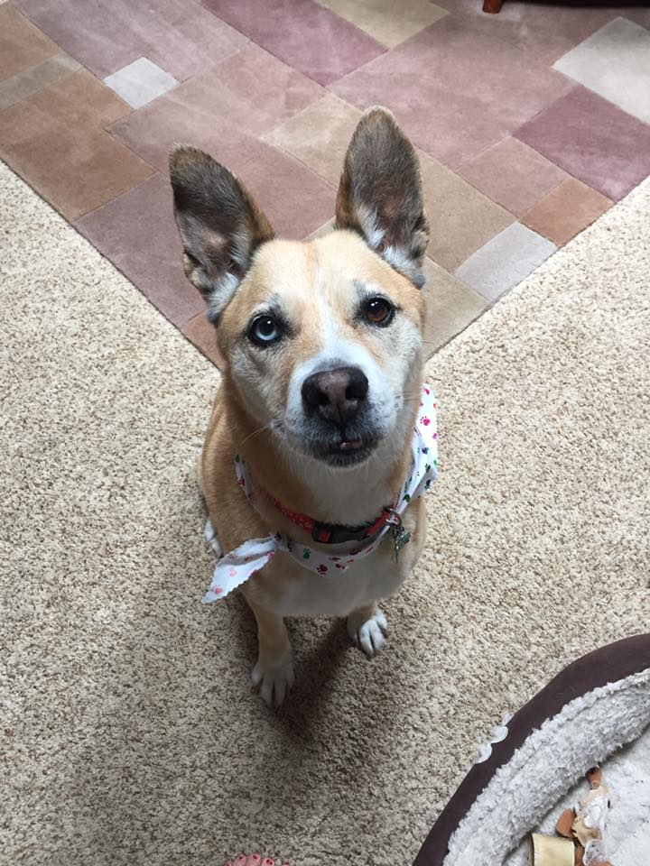
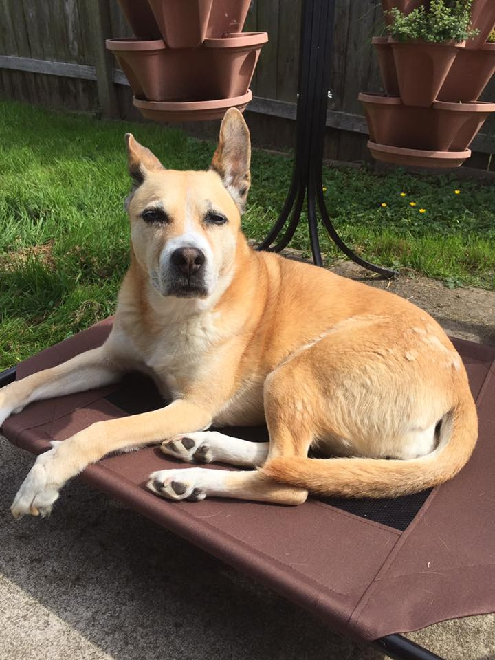
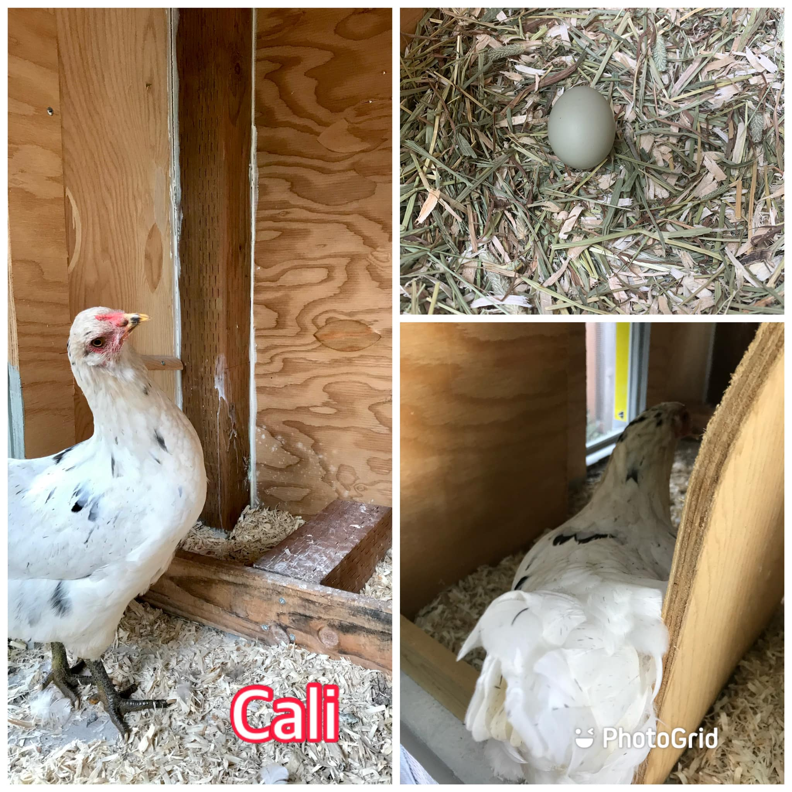
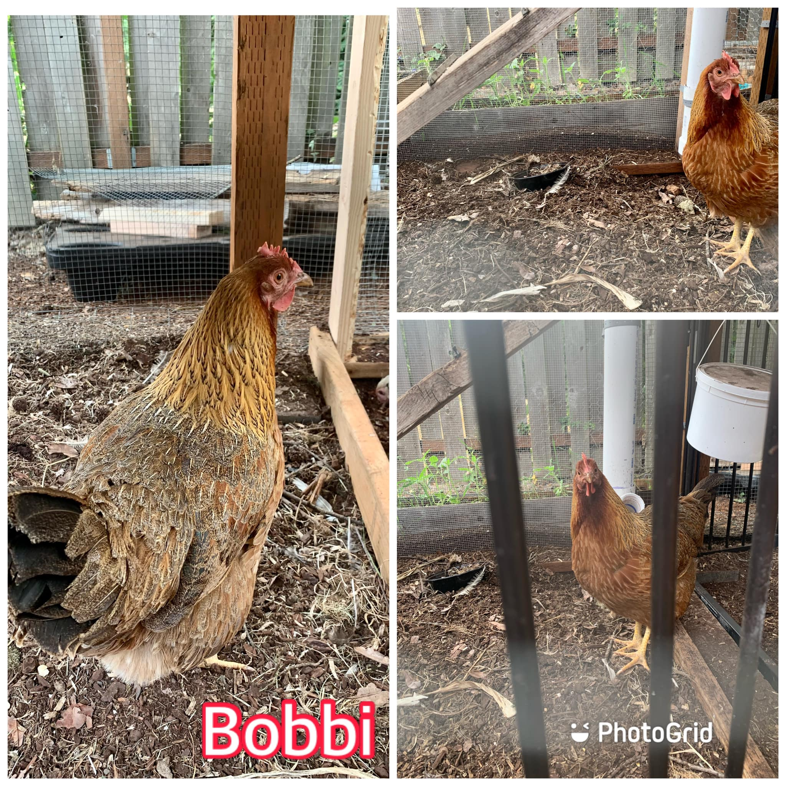
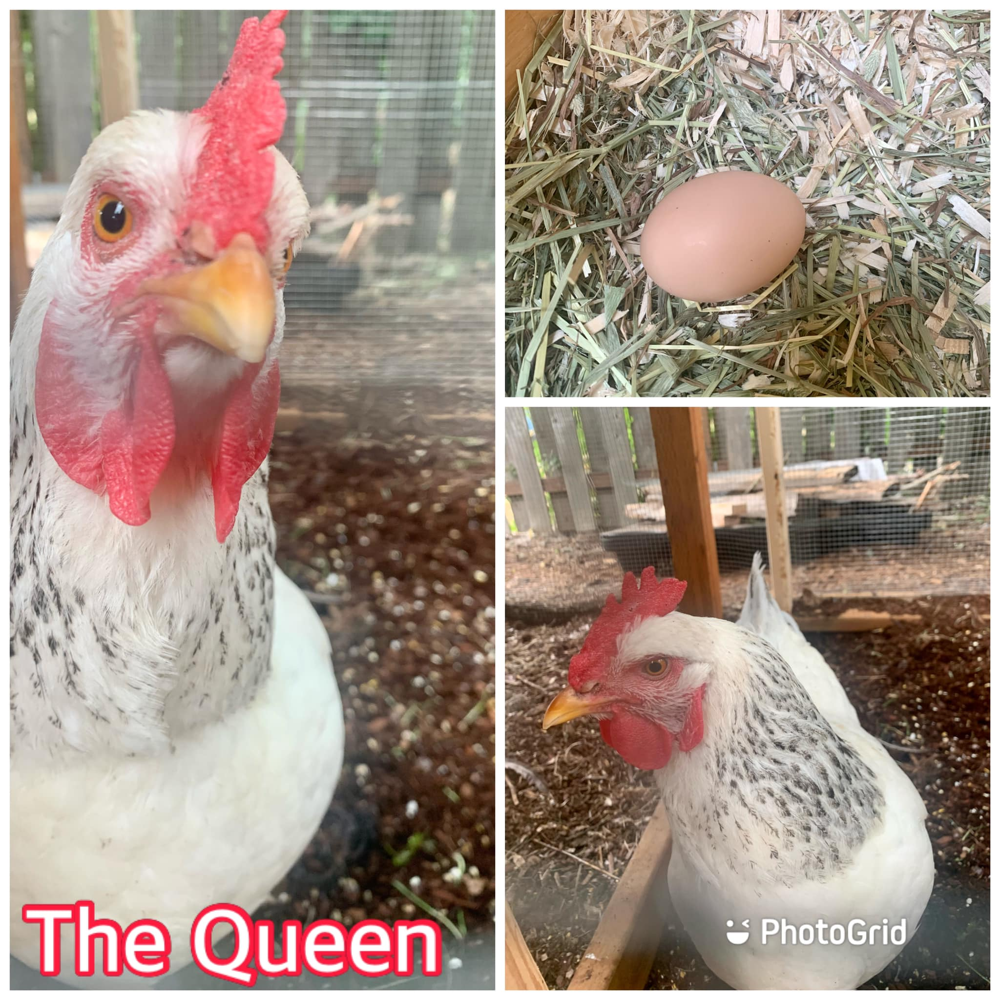
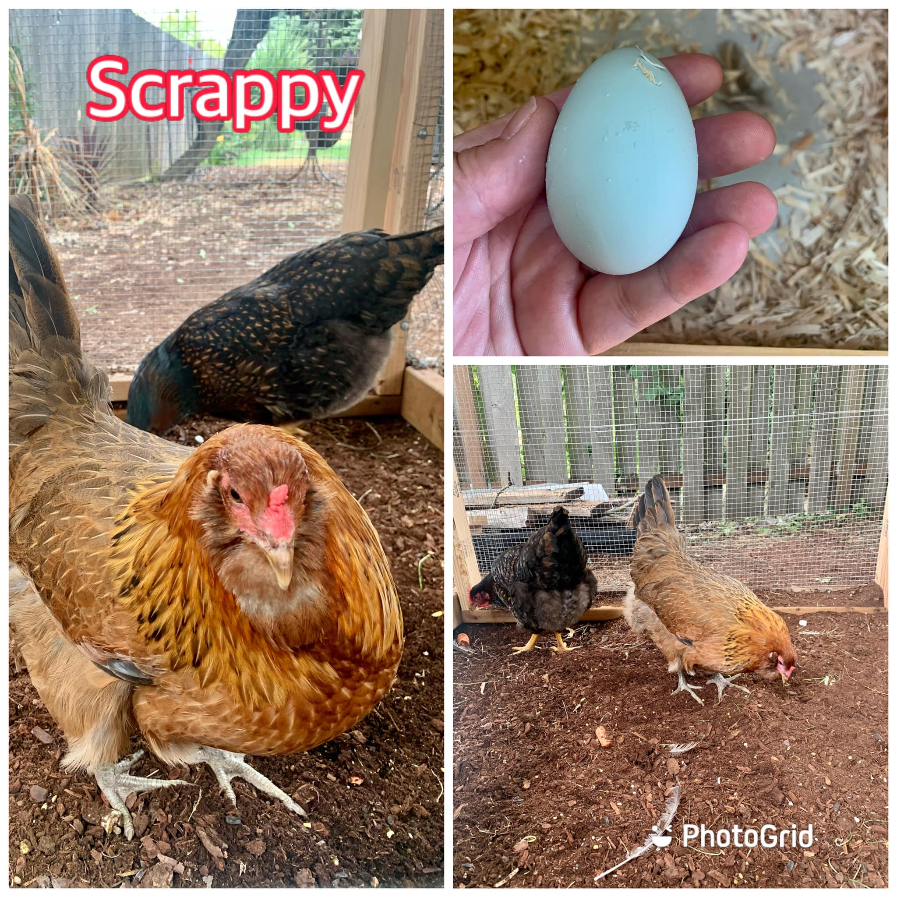
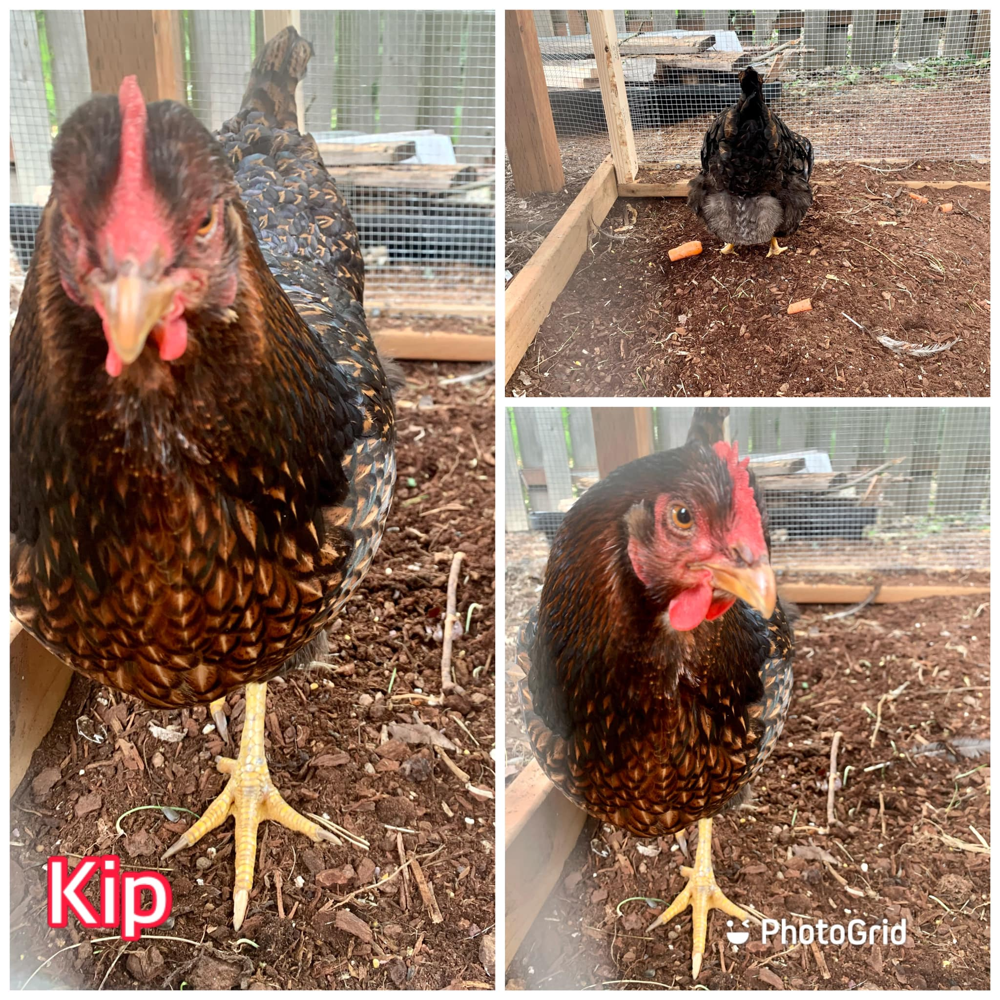
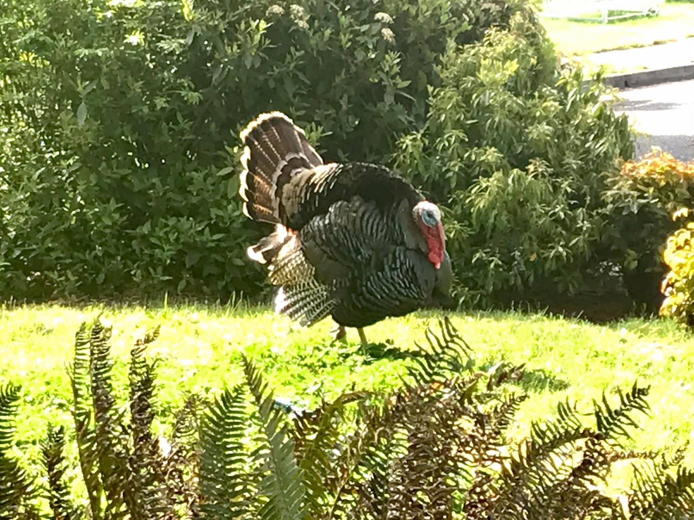

My Bio
A native Oregonian and lover of all things nature, my focus is on user-centric design principles that embody the path-of-least-resistance flow and visual appeal consistent with that of the natural world.
I earned a Master of Science in Graphic Information Technology, with a concentration in user experience design principles, in May of 2022 and a Bachelor of Applied Science in Internet and Web Development in 2021, graduating summa cum laude, both from Arizona State University.

I have a passion for helping others and volunteer work. Prior to embarking on my career in IT, I worked with children who were living in foster care. My role at the foster care agency as an Inclusion Facilitator was to work with children with developmental delays to empower them for success by helping them gain life skills.
The work at the foster care agency was very rewarding and emotionally challenging. I carry those experiences forward and currently volunteer weekly with a non-profit organization called Waste to Taste. I wrote an article about the organization and my experiences volunteering there, which was published in The Spark, found on page 43.
I love gardening, growing my own food, and just being outdoors. Combining my love for gardening and my passion for helping and teaching others I wrote an article on Vermicompost, which was also published in The Spark, found on page 2.
Check out my TikTok account, Autumn Farms, dedicated to backyard farming and my recipe website, Autumn All Year, for some creative cooking ideas. Or follow along on Instagram
About My Page
As a User Experience (UX) Graphic Designer and HTML and CSS coder, I designed this site with responsive web design concepts in mind. This user interface (UI) is designed to provide a consistent experience across multiple device platforms, including desktop/laptop, tablet, and mobile.
The site is designed to be accessible by site visitors who utilize common web browsing practices, such as a mouse, as well as site visitors who utilize alternate means of browsing, such as keyboard tabs and blow-suck tubes. Lastly, the site is designed to be read visually via a standard monitor, or to utilize vision assisting software such as screen reading software.
About My Animals
When I’m not designing, cooking, gardening, or volunteering, I love to eat BBQ, refurbish furniture, rescue dogs, and find ways to caffeinate. This is my girl, Lucky. I rescued her from an animal shelter when she was a year old. She's been with me for 15 years ❤
 I also have backyard chickens and wild turkeys that frequently come by to drink from the sprinkler in my front yard, scratch around for food, and strut across the lawn, which I am pretty sure they think is a runway in their own personal fashion show.
     